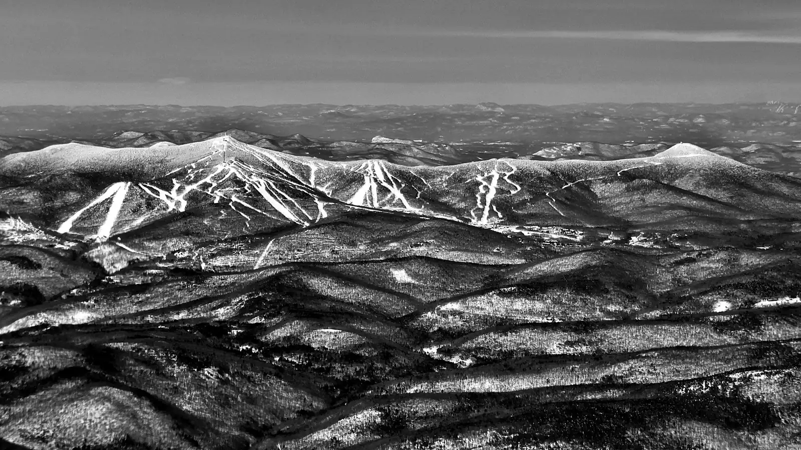

Killington, Vermont · Ski conditions
Killington Conditions and Webcams Today
Killington's webcams today, its opening day, and kid facts: kids 6 and under ski free, lesson ages, childcare, tubing prices and free parking. An overnight or weekend trip from New York City: Amtrak runs from Penn Station to Rutland, then a bus to the mountain.
Researched with AI (Miles Rowan) · sources linked and dated · How we check
Killington's own status
Passholders only todayOpens to everyone Wed, Nov 18 (passholders Tue, Nov 17) (Killington's hours page, read Nov 16).
Our webcam read
No cam read from us yet. Cam reads show here only when a recent one has passed a separate automated accuracy check.

Coming for the holidays? Christmas in New York City with kids, free and paid
Cam by cam
The 7 Killington cam views our reader uses, in our own descriptive words (Killington names its cams differently) (see Killington's own cam page, read Nov 16): Killington base area, Killington base valley, K-1 Lodge base, Killington summit lift top, Killington summit clearing, Chairlift over trail, Trail base view. Once our reads start, each cam's last read time shows here.
Plan the day with kids
- Kids 6 and under: Ski free. Pick up their ticket at a ticket window.
- Kids 12 and under: Each adult 5-day-or-longer date-specific ticket gets one free kids' ticket for the same dates; not for tickets starting on peak days, K-Ticket vouchers or spring passes.
- Tickets: Online only. Prices change by date and rise as your ski day gets closer, so buy ahead. Killington takes the Ikon Pass.
- Changes: Cancel up to 10 a.m. on the ticket's date; you get a credit voucher, not cash.
- Lessons: Ministars group lessons for ages 4 to 6, Youth Group Lessons for ages 7 to 15, and private lessons from age 3 (including 1-hour privates for ages 3 to 4). Kids' groups meet at the Ramshead Base Area; arrive 30 minutes early for tickets and rentals.
- Childcare: Killington Child Care Center, in Ramshead Base Lodge, takes babies from 12 weeks. Book in the ChildPilot app or at 802-422-6222; each child's vaccination record is required. Full refund up to 7 days before; drop-off by 10 a.m.
- Parking: Free at all five base lodges, with shuttles between lodges and lots from 30 minutes before lifts open until 5 p.m. Paid premium spots at K-1 and Snowshed.
Snow tubing and kids' ticket prices on Killington's pages, read Nov 16:
- Lift ticket, age 6 and under: Free, plus a $6 One Pass card if your child doesn't have one
- Snow tubing, age 17 and under (bought ahead, regular dates): $25 (peak dates $29; same day $29 or $34)
- Snow tubing, adults 18+ (bought ahead, regular dates): $30 (peak dates $34; same day $35 or $40)
- Family of 4 tubing estimate (2 adults, 2 kids, bought ahead, regular date, assuming one price per rider per 1-hour session): about $117 with 6% tax (our sum)
From Killington's winter 2026/27 lift ticket and tubing pages. Killington doesn't say whether tubing prices are per rider per session, and another line on its page says from $29 adult and $24 youth, so check at booking. Sessions are 1 hour; riders must be 36 inches tall; 6% Vermont sales tax extra. Its childcare and premium parking prices were last winter's, so we leave them out.
Lift tickets and lessons: We haven't read Killington's day ticket prices for older kids and adults (they change by date), so check live. See Killington lift tickets.
From Killington first-time visitor guide, Killington group and private lessons, Killington child care, Killington transportation and parking and Killington hours, read Nov 16.
Getting there from New York City
- Car: Killington lists drive times from airports, not from NYC: about 2¼ hours from Albany and 2 hours 40 minutes from Hartford's Bradley airport.
- Train: Amtrak runs daily from New York Penn Station through Albany to Rutland; from Rutland, The Bus runs hourly to the mountain, Killington says.
- Fly: Rutland airport (about 35 minutes away) has Cape Air flights from Boston; Lebanon, NH (about 55 minutes) has two daily flights from White Plains. Uber and Lyft aren't reliable at Rutland, so book a ride ahead.
Closer hills for a day trip: skiing near New York City with kids.
If the snow is thin
- Snowmaking: Killington started making snow on Oct 17 with 165 snow guns on five trails, two weeks earlier than last year, it said.
- Snow tubing: scheduled Dec 18 to Mar 21 at the Clubhouse on East Mountain Road, Fridays 3 to 6 p.m. and weekends, plus holiday weeks.
- Weather: lift tickets can be cancelled until 10 a.m. on the day, for a credit voucher.
From Killington snowmaking news (Oct 17) and Killington snow tubing and Killington lift tickets, read Nov 16.
How we read the cams: a program looks at Killington's public webcam pictures and notes only what a picture can show: fresh snow, snow cover, snowmaking, moving lifts, how busy the base looks, visibility and the snow stake. Each read shows its time; after 90 minutes it is marked older, after 6 hours it is hidden. We never say whether terrain is safe, icy, groomed or open; Killington's own report decides that. We don't show the cam pictures or count people.
Sources: Killington webcams · Killington hours · Killington group and private lessons · Killington child care · Killington transportation and parking · Killington first-time visitor guide · Killington snow tubing (read Nov 16). We haven't skied Killington.